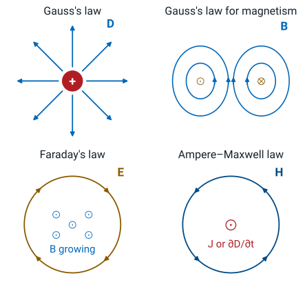
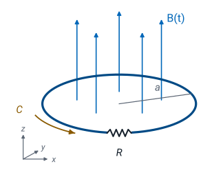
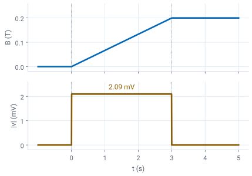
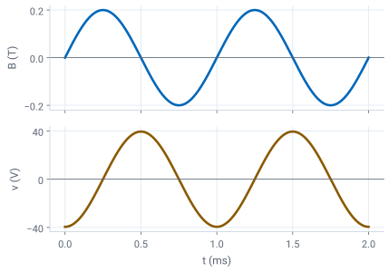
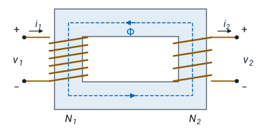

L34 - Maxwell’s Equations#
Maxwell's Equations
Today we collect the four laws of electromagnetics for fields that change with time.
Lesson 34 · Module 4: Dynamic Fields · Maj Ellis · Dr. Neil Rogers
Learning Objectives
- I know the forms of Maxwell's equations for time-varying fields and use them to calculate electric and magnetic fields for a variety of physical systems.
Modules 2 and 3 derived four laws for fields that do not change with time, and Lesson 33 added the two terms that a changing field brings: Faraday’s \(\partial\mathbf{B}/\partial t\) and Maxwell’s displacement current \(\partial\mathbf{D}/\partial t\). Today we write the four laws together as Maxwell’s equations, in integral and point form, and see what each says. We then use the set three ways: to find the voltage that a changing magnetic flux induces in a loop, to check that a proposed pair of fields obeys all four laws, and to derive the voltage and current ratios of an ideal transformer. Lessons 35 through 37 use the same equations to show that the fields travel as a wave.
Where We Were
Law |
Static form |
Lesson |
|---|---|---|
Gauss’s law |
\(\oint_S \mathbf{D}\cdot d\mathbf{s} = Q_\text{encl}\) |
20–21 |
Gauss’s law for magnetism |
\(\oint_S \mathbf{B}\cdot d\mathbf{s} = 0\) |
28 |
Circulation of \(\mathbf{E}\) |
\(\oint_C \mathbf{E}\cdot d\mathbf{l} = 0\) |
22 |
Ampere’s law |
\(\oint_C \mathbf{H}\cdot d\mathbf{l} = I_\text{encl}\) |
29 |
Lesson 30 closed Module 3 with this table of the laws of static fields. Two laws describe the electric field and two the magnetic field, and in statics the two halves never mix: charges make the electric field, currents make the magnetic field, and neither field appears in the other’s equations. Lesson 33 showed that this separation fails once the fields change. A changing magnetic flux through a closed path drives a circulation of \(\mathbf{E}\) around it, so the static Faraday’s law gains a term. A charging capacitor carries a current into one plate with no conduction current across the gap, so Ampere’s law gains a term in the changing electric flux. Today we write the four laws with those two terms in place.
Maxwell’s Equations
Law |
Integral form |
|---|---|
Gauss’s law |
\(\oint_S \mathbf{D}\cdot d\mathbf{s} = Q_\text{encl}\) |
Gauss’s law for magnetism |
\(\oint_S \mathbf{B}\cdot d\mathbf{s} = 0\) |
Faraday’s law |
\(\oint_C \mathbf{E}\cdot d\mathbf{l} = -\frac{d}{dt}\int_S \mathbf{B}\cdot d\mathbf{s}\) |
Ampere–Maxwell law |
\(\oint_C \mathbf{H}\cdot d\mathbf{l} = I_\text{encl} + \frac{d}{dt}\int_S \mathbf{D}\cdot d\mathbf{s}\) |
Together with the material relations later in this lesson, these four equations describe every classical electromagnetic field. The two Gauss’s laws keep their static form: Lesson 20 derived Gauss’s law from Coulomb’s law and Lesson 21 its point form, and Lesson 28 showed that magnetic field lines close, so the net magnetic flux out of any closed surface is zero. Neither law contains a time derivative, so each holds at every instant even when the fields change. Faraday’s law is Lesson 33’s: the circulation of \(\mathbf{E}\) around a closed path \(C\) equals the negative rate of change of the magnetic flux through a surface \(S\) bounded by \(C\). The Ampere–Maxwell law is Lesson 29’s Ampere’s law with Lesson 33’s displacement current added: the circulation of \(\mathbf{H}\) equals the conduction current through \(S\) plus the rate of change of the electric flux through it. In both circulation laws, the right-hand rule of Lesson 29 ties the direction of travel around \(C\) to the normal of \(S\).
What Each Equation Says
Law |
Point form |
|---|---|
Gauss’s law |
\(\nabla\cdot\mathbf{D} = \rho_v\) |
Gauss for magnetism |
\(\nabla\cdot\mathbf{B} = 0\) |
Faraday’s law |
\(\nabla\times\mathbf{E} = -\frac{\partial\mathbf{B}}{\partial t}\) |
Ampere–Maxwell law |
\(\nabla\times\mathbf{H} = \mathbf{J} + \frac{\partial\mathbf{D}}{\partial t}\) |

The point forms state each law at a single point. Lessons 21 and 28 derived the two divergence equations, Lesson 33 derived the point form of Faraday’s law with Stokes’ theorem, and Lesson 33 derived the Ampere–Maxwell point form from the continuity equation and Gauss’s law. Each equation names a source, and the figure draws one panel per law. Gauss’s law says that electric flux begins and ends on charge. Gauss’s law for magnetism says that there is no magnetic charge, so magnetic flux has nowhere to begin or end. The two curl equations are where time enters, and they couple the fields: a magnetic field that changes with time produces an electric field that circulates around it, and an electric field that changes with time produces a magnetic field that circulates around it, just as a conduction current does. The minus sign in Faraday’s law is Lenz’s law from Lesson 33: in the third panel the growing flux points out of the page, and the clockwise \(\mathbf{E}\) drives a current whose own flux points into the page. Taking the divergence of the Ampere–Maxwell law gives back Lesson 33’s continuity equation, \(\nabla\cdot\mathbf{J} = -\partial\rho_v/\partial t\), so the set conserves charge. Because each field’s change drives the other, the pair can sustain itself in a region with no charge and no current at all, which is the electromagnetic wave of Lessons 35 through 37.
The Static Limit
With \(\partial/\partial t = 0\):
The fields decouple into Modules 2 and 3.
When nothing changes with time, every time derivative in the set is zero. The curl of \(\mathbf{E}\) vanishes, which is the conservative field of Lesson 22, and the Ampere–Maxwell law reduces to Lesson 29’s Ampere’s law. The two Gauss’s laws keep their form. What remains is the table of static fields from the start of the lesson, in which the electric field depends only on charge and the magnetic field only on current. The static results also hold approximately when the fields change slowly enough. A circuit much smaller than a wavelength, the condition of Lesson 3’s electrical length, sees the same field everywhere at each instant, so we can solve it as if it were static at each moment. That quasi-static approximation is how we treat the loops and the transformer later in this lesson.
The Material Relations
Maxwell’s equations hold in any material. The material enters through three relations from earlier lessons: \(\mathbf{D} = \epsilon\mathbf{E}\) from Lesson 20, \(\mathbf{B} = \mu\mathbf{H}\) from Lesson 28, and Ohm’s law in point form, \(\mathbf{J} = \sigma\mathbf{E}\), from Lesson 27. In a uniform material with constant \(\epsilon\), \(\mu\), and \(\sigma\), the three relations let us write the set in \(\mathbf{E}\) and \(\mathbf{H}\) alone. The Ampere–Maxwell law then has a conduction term and a displacement term side by side. For a field that varies as \(\cos\omega t\), the conduction term has amplitude \(\sigma E\) and the displacement term \(\omega\epsilon E\), so their ratio is \(\sigma/(\omega\epsilon)\), the ratio Lesson 33 computed for copper, seawater, and polyethylene to decide which current dominates.
Example 1: A Loop in a Ramping Field
\(a = 10\) cm, \(R = 1\ \text{k}\Omega\), \(B_0 = 0.2\) T, \(t_0 = 3\) s:

A wire loop of radius \(a = 10\) cm lies in the \(xy\) plane with a \(1\ \text{k}\Omega\) resistor in a small gap. A uniform magnetic flux density \(\mathbf{B} = \hat{\mathbf{z}}\ B(t)\) fills the region. It is zero before \(t = 0\), rises linearly to \(B_0 = 0.2\) T over \(t_0 = 3\) s, and then holds steady. We want the voltage across the resistor and the current through it. We take the path \(C\) along the wire, counterclockwise as seen from \(+z\), so by the right-hand rule the normal of the flat surface \(S\) inside the loop is \(+\hat{\mathbf{z}}\). The loop is a fraction of a meter across and the field changes over seconds, so the quasi-static approximation holds, and the wire, a good conductor, carries essentially no electric field: the whole circulation of \(\mathbf{E}\) appears across the gap.
Example 1: The Induced Voltage

\(\mathbf{B}\) is uniform and along the normal, so the flux through \(S\) is the field times the area, \(\Phi = \pi a^2 B(t)\). Faraday’s law gives the circulation as the negative rate of change of that flux. During the ramp the flux grows at the constant rate \(\pi a^2 B_0/t_0\), so the circulation is a constant \(-2.09\) mV for \(0 < t < t_0\); before the ramp and after it the flux does not change, and the circulation is zero. The minus sign means the electric field drives current clockwise as seen from \(+z\), opposite to \(C\). A clockwise current makes a magnetic field along \(-\hat{\mathbf{z}}\) inside the loop, which opposes the growing flux, as Lenz’s law requires. The resistor carries the full \(2.09\) mV, so Ohm’s law gives a current of \(2.09\ \text{mV}/1\ \text{k}\Omega = 2.09\ \mu\)A for the 3 s of the ramp. The voltage depends on how fast the flux changes, not on how large it is: at \(t = 5\) s the field is at its largest and the voltage is zero.
Example 2: A Sinusoidal Field

Example 2 keeps the loop and the resistor and drives the field sinusoidally at \(f = 1\) kHz, with the same amplitude \(B_0 = 0.2\) T. The flux is \(\pi a^2 B_0\sin\omega t\), with \(\omega = 2\pi f = 6283\) rad/s. Differentiating gives a voltage that follows \(-\cos\omega t\), with amplitude \(\pi a^2 B_0\omega = \pi(0.1)^2(0.2)(6283) = 39.5\) V. The resistor current has amplitude \(39.5\ \text{V}/1\ \text{k}\Omega = 39.5\) mA. The voltage is largest when \(B\) passes through zero, where the flux changes fastest, and it lags \(B\) by a quarter period. Compared with Example 1, the same field amplitude produces about \(19{,}000\) times the voltage. The voltage follows the rate of change of \(B\): its peak is \(B_0\omega\) here and \(B_0/t_0\) during the ramp, and their ratio is \(\omega t_0 = 2\pi(1000)(3) = 18{,}850\). The induced voltage grows in proportion to frequency, which is why power transformers and the coupled coils of wireless chargers work with alternating current.
Checking a Pair of Fields: Faraday’s Law
\(\mathbf{E} = \hat{\mathbf{x}}\ E_0\cos(\omega t - \beta z)\), in a uniform lossless region with no charge or current:
Maxwell’s equations also tell us whether a proposed field can exist, and if it can, what field must accompany it. We take an electric field along \(\hat{\mathbf{x}}\) that varies with \(z\) and \(t\) as \(\cos(\omega t - \beta z)\), in a region with permittivity \(\epsilon\), permeability \(\mu\), and no charge or current. Because \(E_x\) depends only on \(z\), the only surviving term of the Cartesian curl from Lesson 17 is the \(\hat{\mathbf{y}}\) component \(\partial E_x/\partial z\). Faraday’s law sets that curl equal to \(-\mu\ \partial\mathbf{H}/\partial t\). Integrating with respect to time, and dropping the constant of integration, which would be a static field unrelated to this one, gives \(\mathbf{H}\) along \(\hat{\mathbf{y}}\), in phase with \(\mathbf{E}\) and perpendicular to it. The two Gauss’s laws hold automatically: \(D_x\) does not depend on \(x\) and \(B_y\) does not depend on \(y\), so both divergences are zero.
Checking a Pair of Fields: Ampere–Maxwell
The last equation is the test. With no conduction current, the Ampere–Maxwell law requires \(\nabla\times\mathbf{H} = \epsilon\ \partial\mathbf{E}/\partial t\). The curl of \(\hat{\mathbf{y}}\ H_y(z, t)\) has only the component \(-\partial H_y/\partial z\) along \(\hat{\mathbf{x}}\). Both sides vary as \(\sin(\omega t - \beta z)\), so they agree at every point and time only if their coefficients match, \(\beta^2/(\mu\omega) = \epsilon\omega\). The pair of fields therefore satisfies all four of Maxwell’s equations only when \(\beta = \omega\sqrt{\mu\epsilon}\), and the ratio of the amplitudes becomes \(\mu\omega/\beta = \sqrt{\mu/\epsilon}\), the intrinsic impedance \(\eta\) that Lessons 6 and 30 quoted and Lesson 37 derives. In free space at 100 MHz, \(\beta = 2.10\) rad/m, a wavelength of \(3.00\) m, and a field of \(E_0 = 1\) V/m comes with \(H_0 = 2.65\) mA/m. This pair is a uniform plane wave, which Lessons 35 through 37 derive directly from Maxwell’s equations.
The Ideal Transformer: Voltage

A transformer is two windings on one closed core. Lesson 31 showed that a core with \(\mu_r\) in the thousands draws the magnetic field into itself, so nearly all of the flux \(\Phi\) stays in the core and passes through every turn of both windings. We model the ideal case, in which all of the flux stays in the core and the windings have no resistance. Each turn of winding 1 is a closed path around the core, and Faraday’s law gives a circulation of \(d\Phi/dt\) in magnitude around it. The \(N_1\) turns are in series, so their voltages add to \(v_1 = N_1\ d\Phi/dt\), with the sign set by drawing the windings so that \(v_1\) and \(v_2\) are positive together. Winding 2 links the same flux, so \(v_2 = N_2\ d\Phi/dt\). Dividing eliminates the flux. The voltage ratio is the turns ratio, and it holds at every instant, whatever the shape of the waveform, as long as the flux changes.
The Ideal Transformer: Current
The currents come from Ampere’s law around the dashed path of length \(\ell_c\) through the core. At 60 Hz the wavelength is about 5000 km, so the displacement current in the core is negligible, and the quasi-static Ampere’s law of Lesson 29 applies. Winding 1 carries \(i_1\) through the surface bounded by the path \(N_1\) times, and winding 2 carries \(i_2\), drawn leaving its positive terminal, \(N_2\) times in the opposite sense. If \(H\) is uniform along the path, the circulation is \(H\ell_c\). With \(B = \mu H\) and \(\Phi = BA\) for a core of cross-sectional area \(A\), the circulation is \(\Phi\ell_c/(\mu A)\). A finite flux needs almost no net current when \(\mu\) is very large, so in the ideal transformer, with \(\mu \to \infty\), the two terms balance. The current ratio is the inverse of the turns ratio, and multiplying the two ratios shows that the power into winding 1 equals the power out of winding 2: the ideal transformer stores and dissipates nothing.
Worked Example: A 120 V to 12 V Transformer
\(N_1 = 600\), \(N_2 = 60\), \(6\ \Omega\) load, core area \(6\ \text{cm}^2\):
Worked example — sizing a power transformer
A transformer steps a \(120\) V rms, \(60\) Hz line down to \(12\) V rms for a \(6\ \Omega\) load. The turns ratio is \(120/12 = 10\), so with \(N_1 = 600\) the secondary needs \(N_2 = 60\) turns. The load draws \(I_2 = 12/6 = 2\) A, the primary draws \(I_1 = 2\times60/600 = 0.2\) A, and both sides carry \(P = 24\) W.
The core must carry the flux that Faraday’s law requires. With \(v_1 = V_\text{1,pk}\cos\omega t\) and \(v_1 = N_1\ d\Phi/dt\), integrating gives \(\Phi = (V_\text{1,pk}/N_1\omega)\sin\omega t\), so the peak flux is \(V_\text{1,pk}/(N_1\omega)\). The peak line voltage is \(120\sqrt{2} = 169.7\) V and \(\omega = 2\pi(60) = 377\) rad/s, so \(\Phi_\text{pk} = 0.750\) mWb. Through a core of area \(6\ \text{cm}^2\), the peak flux density is \(1.25\) T. Silicon-steel cores saturate near \(1.5\) to \(1.7\) T: by then the field has lined up nearly all of the iron’s atomic magnetic moments (Lesson 31), so more \(H\) adds little \(B\), \(\mu\) falls, and the ideal model fails. A \(4\ \text{cm}^2\) core would need \(1.88\) T, which is why the design uses the larger core or more primary turns. The flux does not depend on the load, because \(v_1\) alone sets it.
Summary
Symbol / idea |
What it is |
Result |
|---|---|---|
Gauss’s law |
Charge is the source of \(\mathbf{D}\) |
\(\nabla\cdot\mathbf{D} = \rho_v\) |
Gauss’s law for magnetism |
No magnetic charge |
\(\nabla\cdot\mathbf{B} = 0\) |
Faraday’s law |
A changing \(\mathbf{B}\) drives a circulating \(\mathbf{E}\) |
\(\nabla\times\mathbf{E} = -\partial\mathbf{B}/\partial t\) |
Ampere–Maxwell law |
Current and a changing \(\mathbf{D}\) drive \(\mathbf{H}\) |
\(\nabla\times\mathbf{H} = \mathbf{J} + \partial\mathbf{D}/\partial t\) |
Continuity |
The set conserves charge |
\(\nabla\cdot\mathbf{J} = -\partial\rho_v/\partial t\) |
Static limit |
\(\partial/\partial t = 0\) |
The laws of Modules 2 and 3 |
Material relations |
Uniform material |
\(\mathbf{D} = \epsilon\mathbf{E}\), \(\mathbf{B} = \mu\mathbf{H}\), \(\mathbf{J} = \sigma\mathbf{E}\) |
Induced voltage |
Loop of fixed area \(A\) in uniform \(B(t)\) |
\(\vert v\vert = A\ \vert dB/dt\vert\) |
Plane-wave pair |
\(\hat{\mathbf{x}}\ E\) and \(\hat{\mathbf{y}}\ H\) along \(z\) |
\(\beta = \omega\sqrt{\mu\epsilon}\), \(E/H = \eta\) |
Ideal transformer |
Shared core flux |
\(v_2/v_1 = N_2/N_1\), \(i_2/i_1 = N_1/N_2\) |
Practice
Where This Is Going
Lesson 35: Maxwell’s equations in phasor form, decoupled into a wave equation for \(\mathbf{E}\) alone.
Lesson 36: its solutions, including waves in lossy material.
Today we collected Maxwell’s equations in integral and point form and saw that the set conserves charge. The field pair we checked was a wave traveling along \(z\) at \(\omega/\beta = 1/\sqrt{\mu\epsilon}\), and we found it by guessing. Lesson 35 removes the guess: in a region with no charge or current, it writes the equations in the phasor form of Lesson 2 and combines the two curl equations into one wave equation for \(\mathbf{E}\), the field counterpart of the transmission-line wave equation of Lesson 4. Lesson 36 solves it.
Before Lesson 35, read sections 9.1 and 9.2 of Ellingson, Electromagnetics, Vol. 1.